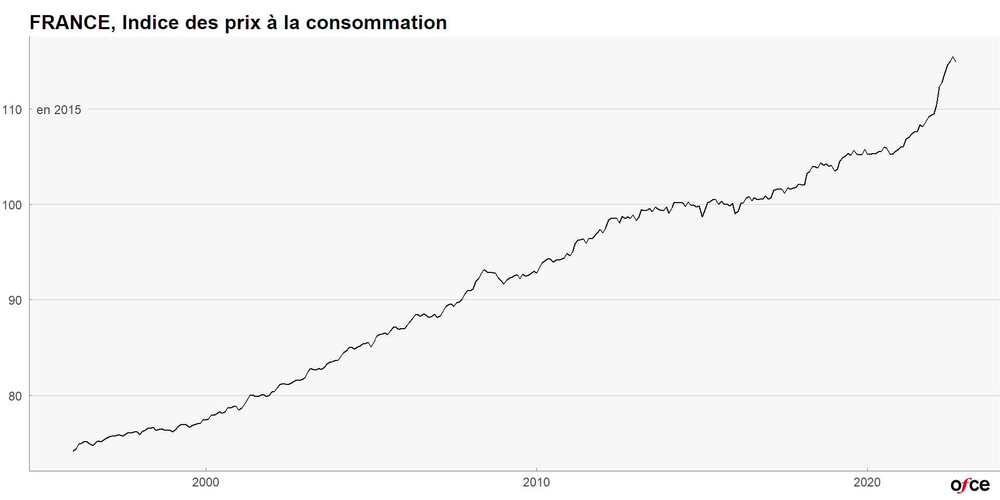
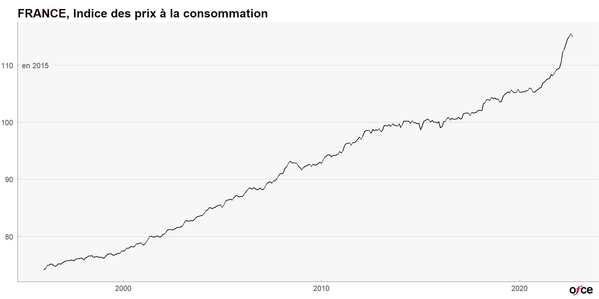
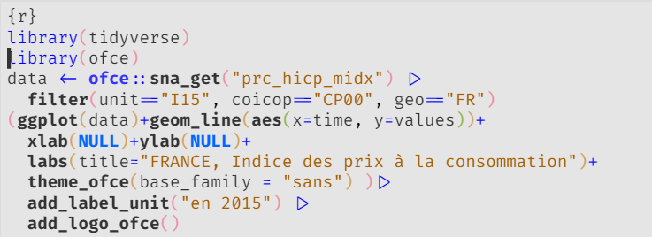
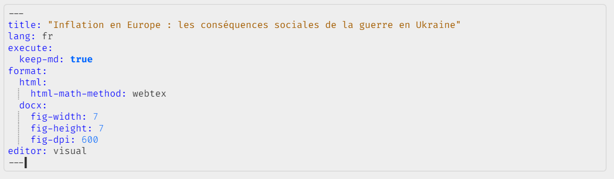
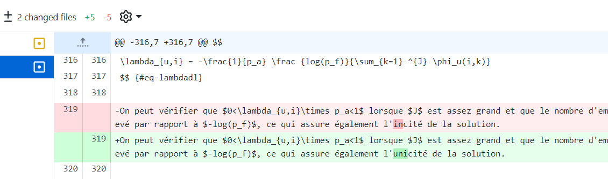

Xavier Timbeau
En utilisant {ggplot2}, on a vu comment produire des graphiques
le package {ofce} permet de les mettre en forme


{ofce}des palettes de couleur
fonctions pour enregistrer les graphiques au format svg ou png
des fonctions pour accéder à eurostat facilement,
pour l’installer devtools::install_github("ofce/ofce")(penser à le faire souvent pour les MAJ)
Quarto est un ensemble de fonctions qui permettent:
éditer un document en markdown (HTML simplifié)
avec des équations (latex)
ajouter du code (R, phython, Julia) dans des code chunks
intégrer des graphiques ou des tableaux
intégrer des éléments plus complexes
une table des matières, des figures, des tableaux
des références bibliographiques
des références croisées (lien vers une section, un autre document)
un morceau de document avec
{{< include xxx.qmd >}}
render vers de nombreux formatsHTML ; pdf (latex) ; word ; powerpoint (non pas Excel)
revealjs (pour une présentation, comme ici)
un blog (ou un site web complet)
Le même document .qmd génère les différents formats
Le yaml du document en précise les options:

.qmd est un fichier texteIl peut être édité par différents programmes dont RStudio
visual, où l’on prévisualise l’aspect, les équations et où on peut coller des images provenant de n’importe où. (des copies d’écran comme ici, mais aussi des graphiques excel)..qmd est un fichier texteIl peut être mis sur github pour travailler à plusieurs sur un même fichier
avec la gestion des conflits, le retour en arrière et le versionning

les images sont dans un dossier à part
pdf/Latex
modèle de document ou préambule latex, assurant une mise en page automatique
on peut ajouter des balises latex pour des détails
HTML
Word
Du code R avec des données téléchargées, traitées
Des graphiques produits avec ggplot2, des tableaux avec gt
un travail collaboratif avec François G. et Guillaume A. avec github
différentes sorties :
un post en html
un document en pdf, mis à jour chaque mois
un site intégrant du shiny (en construction)
Une seule source pour les graphiques et le texte
ou
Du code R avec des calculs
Un document complexe avec équations, ref croisées, biblio
Différentes sorties :
Des graphiques
Des données
un pdf/word à la demande
des présentations
RStudio devient Posit, pour marquer que ce n’est pas spécialisé à R
Quarto va pouvoir s’utiliser dans une grande variété d’éditeurs/environnement
Anissa S. et quelques autres développent en ce moment même des templates
quarto